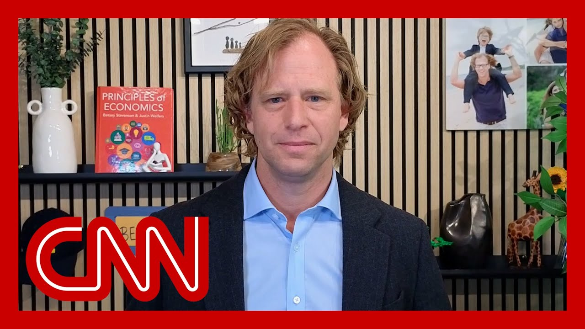

【这不是胜利：经济学家对中美贸易休战的反应】
Summary: The economist discusses the short-term benefits of the US-China trade truce but expresses skepticism about long-term stability, citing unpredictable tariff policies and unreliable US trade behavior, which may push global partners to diversify away from the US.
摘要： 经济学家讨论了中美贸易休战的短期好处，但对长期稳定性表示怀疑，指出不可预测的关税政策和不可靠的美国贸易行为可能促使全球伙伴减少对美国的依赖。

⏱️ Estimated Reading Time: 17 min
Justin, great to see you.
贾斯汀，很高兴见到你。
As always, your reaction to this deal to come up with a longer term deal later.
一如既往，你对这项协议的反应是以后达成更长期的协议。
let me give you a short term reaction in the longer run.
让我从长远角度给你一个短期反应。
The short term reaction is this is very good news.
短期反应是这是个非常好的消息。
Our tariffs on China were previously so high it was effectively an embargo.
我们之前对中国的关税高得实际上等同于禁运。
We don't actually have to travel to Geneva for the US government to decide to cut the the rate at which it taxes Americans for importing goods from China.
我们其实不必去日内瓦让美国政府决定降低对美国人从中国进口商品的税率。
But I'm glad that it did.
但我很高兴它这么做了。
And it's going to it's going to create a whole lot of calm for the next few days.
而且这将在未来几天带来很多平静。
The the medium run thing to worry about is at the moment, the half life of a tariff announced in the white House is around 6 to 8 days.
中期需要担心的是，目前白宫宣布的关税的半衰期大约是6到8天。
So as encouraged as I am, this is the movement, the direction in which it's moving.
所以尽管我很受鼓舞，这是趋势，是它发展的方向。
I'm not sure that, we, the businesses can be confident that we're going to hit the more harmonious times that we had, prior to this administration.
我不确定我们企业能否有信心回到本届政府之前更和谐的时期。
The, director of the National Economic Council, Kevin Hassett, says that China made certain concessions when it came to allowing, U.S. exporters to enter the Chinese market or certain aspects of the Chinese market.
国家经济委员会主任凯文·哈塞特表示，中国在允许美国出口商进入中国市场或某些中国市场方面做出了一些让步。
I wonder what you make of that.
我想知道你怎么看这一点。
Is that a win that the white House can point to, to justify levying these tariffs to begin with?
这是白宫可以称之为胜利并证明最初征收这些关税合理的事情吗？
Oh, it's it's not a win and it's not a justification.
哦，这不是胜利，也不是理由。
But more to the point, when the white House says we got some concessions, but I'm not telling you what they are.
但更重要的是，当白宫说我们得到了一些让步，却不告诉我们具体是什么时。
They told us this about the Britain UK deal.
他们在英国协议上也这么说过。
And it turns out that that Britain, UK sorry, the UK, US deal that was actually not a deal.
结果发现那个英国——抱歉，英美协议实际上并不是协议。
It was an agreement to have an agreement at some point in the future.
它只是未来某个时候达成协议的协议。
So if it's not written down and signed and they're not willing to show us that, then I'm not sure I believe it.
所以如果没有书面签署且他们不愿展示，我不确定我会相信。
I do wonder what you think might make some of these tariffs worth it.
我确实想知道你认为什么可能让这些关税值得。
In other words, what your guide posts are for justifying the trade war that this white House has launched.
换句话说，你用什么标准来证明本届白宫发起的贸易战合理。
If they do, in fact, make it so that supply chains are reconfigured and the U.S. is less reliant on China, as Treasury Secretary Scott Benson is suggesting, the administration will continue to pursue.
如果他们确实让供应链重组且美国减少对中国的依赖，正如财政部长斯科特·本森所说，政府将继续追求这一目标。
Do you see that as a win for us, as let's not tie ourselves up in knots trying to make sense of something that we can't make sense of.
你认为这对我们是胜利吗？我们别在试图理解无法理解的事情上把自己绕进去。
look, every time, the administrations move towards more tariffs, the markets are full and they're very unhappy about this.
看，每次政府增加关税，市场都很不满。
They think it undermines the profitability of American business.
他们认为这会损害美国企业的盈利能力。
Every time the administration walks back, markets cheer.
每次政府退缩，市场都会欢呼。
They think that that's useful economic policy, as does most of the economics establishment.
他们认为这是有用的经济政策，经济学界多数人也这么认为。
Look, the long run damage here I think is really worth emphasizing.
看，我认为这里的长期损害真的值得强调。
Let me take you back.
让我带你回顾一下。
Remember, during Covid, global supply chains became fractured and it became a lot of talk that what we needed was more robust, reliable supply partners.
记得在新冠期间，全球供应链断裂，很多人讨论我们需要更强大可靠的供应伙伴。
There was talk of on shoring and friend shoring.
有人谈论在岸外包和友岸外包。
Well, this time something similar is happening, but it's happening in other countries and it's not caused by a virus.
这次类似的事情正在发生，但发生在其他国家且不是由病毒引起的。
It's caused by the white House.
这是由白宫引起的。
The United States has shown itself to be an unreliable trading partner.
美国已证明自己是一个不可靠的贸易伙伴。
And more to the point, its tariff policies change day to day in week to week.
更重要的是，它的关税政策每天都在变，每周都在变。
And as a result, our foreign trading partners are looking for more robust, more stable, more reliable trading partners.
因此，我们的外国贸易伙伴正在寻找更强大、更稳定、更可靠的贸易伙伴。
And so already they're starting to diversify away from the United States.
所以他们已经开始减少对美国的依赖。
If the next dozen plus deals look like what's been struck between the U.S. in the UK and the US and China, what do you imagine this is going to do to the global economy?
如果接下来的十几项协议看起来像英美和中美之间的协议，你认为这会对全球经济产生什么影响？
Is it actually going to effect some great change?
它真的会产生一些重大变化吗？
Not much.
不会太多。
So let me characterize the British deal, because I think it's the one that sets the standard for the rest of the world, except for China.
让我描述一下英国协议，因为我认为它为世界其他国家（除中国外）设定了标准。
The British Steel is basically the US has decided.
英国钢铁基本上是美国决定的。
President Trump has decided, in fact, the tariffs on every other country around the world will be 10%.
特朗普总统实际上已决定对世界上其他国家的关税将为10%。
I want you to put that in a big sheet of paper.
我希望你把它写在一张大纸上。
Let's make it 48 point font.
用48号字体。
And next to that there's a little Asterix.
旁边加个小星号。
The little Asterix says, if you're willing to come to the Rose garden and put on a dog and pony show and and make the president feel good, we'll make a few little carve outs for you as well.
小星号说：如果你愿意来玫瑰园表演一番让总统高兴，我们也会为你做一些小例外。
And when you look at the details of the British deal, the 10% the most important part, the Asterix turns out to be incredibly small.
当你查看英国协议的细节时，最重要的10%部分，星号部分实际上非常小。
They really would know important, economically important carve outs.
他们真的会知道重要的、经济上重要的例外。
And so I think other countries around the world right now are looking at this, and they're understanding that the US government doesn't want Americans buying stuff from them.
所以我认为现在世界其他国家正在看这一点，他们明白美国政府不希望美国人从他们那里买东西。
And so they may be looking elsewhere for trading partners.
所以他们可能在别处寻找贸易伙伴。
President Trump hitting pause on his trade war with China.
特朗普总统暂停与中国的贸易战。
The US and China agreed to roll back drastically.
美国和中国同意大幅回撤。
The tariffs slapped on each other's exports, but only for 90 days while they negotiate a longer deal.
对彼此出口商品征收的关税，但只有90天，同时他们谈判更长期的协议。
Now markets are rallying on the new Dow, up nearly 1000 points.
现在市场因新道指上涨近1000点而反弹。
Investors are very eager to see the world's two biggest economies stepping back from the brink.
投资者非常渴望看到世界两大经济体从边缘后退。
The US is slashing its tariff from 145% to 30%, still historically high.
美国将其关税从145%大幅降至30%，仍处于历史高位。
China will lower its tariffs on U.S. goods from 125 to 10%.
中国将把对美国商品的关税从125%降至10%。
So is this a win for the president?
所以这对总统来说是胜利吗？
I'm back with my panel, Tia.
我回到我的小组，蒂娅。
Is this a win for the president?
这对总统来说是胜利吗？
I mean, I guess today is a win, but overall, is it a win?
我的意思是，我想今天是胜利，但总体上是胜利吗？
Not necessarily.
不一定。
Because you just mentioned the tariffs on goods from China are still historically high, which means consumers in America are still paying more for things than they did previous to the Trump administration.
因为你刚提到对中国商品的关税仍处于历史高位，这意味着美国消费者仍在为商品支付比特朗普政府之前更高的价格。
And again, there's still so much uncertainty about what this deal will look like and what will happen after a 90 day pause.
而且，关于这项协议的样子以及90天暂停后会发生什么，仍有太多不确定性。
And I think a lot of people, even allies of Donald Trump, are still struggling to figure out what is he trying to accomplish with with these tariffs.
我认为很多人，甚至是特朗普的盟友，仍在努力弄清楚他想通过这些关税实现什么。
Is he trying to move manufacturing to the US?
他是想将制造业转移到美国吗？
Is he trying to bully foreign countries into better trade deals?
他是想通过欺凌外国达成更好的贸易协议吗？
We still don't know.
我们仍然不知道。
I don't know how we can consider that a win.
我不知道我们怎么能认为这是胜利。
There was some certainty prior to today, which is that if the tariff remained at 145%, there was no trade.
今天之前有一些确定性，即如果关税保持在145%，就没有贸易。
And we were certainly headed for an economic recession.
我们肯定会走向经济衰退。
That was the certainty.
那是确定性。
So I agree there is some uncertainty now, but this is clearly welcome news to the markets.
所以我同意现在有一些不确定性，但这显然是市场欢迎的消息。
And obviously this is Donald Trump trying to put forth the vision that he's had for decades about tariffs.
显然这是唐纳德·特朗普试图提出他几十年来关于关税的愿景。
And it's just even listening the way you frame the conversation.
甚至听你如何构建对话。
And when you say he's putting a pause on his trade war, if he had come out day one and said, I'm putting a 30% tariff on China, we would call that a trade war, not a pause on a drain.
当你说他暂停贸易战时，如果他第一天就说我要对中国征收30%的关税，我们会称之为贸易战，而不是暂停。
Yeah, right.
是的，没错。
But he had set this up.
但他已经设定了这个。
So two things can be true here.
所以这里两件事可以同时成立。
It is true that he made this mess and put the economy into this tailspin, and is now cleaning it up to some degree, to good reviews from the markets.
确实是他制造了这场混乱并使经济陷入困境，现在在某种程度上清理它，得到市场的好评。
It is also true that we do not yet know if this is going to work and achieve his ultimate goals here.
同样真实的是，我们尚不清楚这是否会奏效并实现他的最终目标。
That that remains to be seen.
这还有待观察。
And that's where the uncertainty exists.
这就是不确定性存在的地方。
And so Trump framed it this morning when speaking at the white House before he left on this foreign trip.
所以特朗普今早在白宫出发进行这次外访前讲话时如此描述。
That would go up substantially higher.
那会大幅提高。
And, you know, at 145, you're really decoupling because nobody's going to buy.
你知道，在145%，你真的在脱钩，因为没人会买。
But they can go.
但它们可以提高。
They got very high because of additional tariffs applied during the course because of fentanyl and other things.
它们变得非常高是因为过程中因芬太尼等增加的关税。
But no, but they'd go substantially higher.
但不，但它们会大幅提高。
He said they'd go substantially higher if they can't get a deal with the 90 days.
他说如果90天内无法达成协议，它们会大幅提高。
So perhaps Short-Lived win.
所以也许是短暂的胜利。
Yeah.
是的。
And perhaps trying to keep the pressure on for his negotiators to come to some sort of an agreement with, with the Chinese to try to try to calm this trade war.
也许是试图保持压力让他的谈判代表与中国达成某种协议以试图平息这场贸易战。
But, yes, I mean, we've seen how his tariff policy through the beginning of the administration has been all over the all over the place.
但是，是的，我的意思是，我们已经看到他的关税政策从政府初期就一直在变化。
You know, it's odd.
你知道，这很奇怪。
It's off is on this sector.
这个行业关了。
It's not on this sector.
那个行业没关。
And it's just kind of that chaos that he himself has created, that he is now then scaling back to David's point.
这只是他自己制造的混乱，他现在正在缩减，正如大卫所说。
I did think, just as a Congress note and as I said, Congress nerd.
我确实想过，作为国会记录，正如我所说，国会书呆子。
And as a side note, he said, he said he also said this morning that he was going to raise so much money from all of his actions, whether it's the tariffs or with the prescription drug pricing order that he announced this morning that he told Speaker Johnson and, Leader Thune that you can use this to score your big tax bill.
作为旁注，他说，他今早还说他会从他的所有行动中筹集大量资金，无论是关税还是他今早宣布的处方药价格命令，他告诉议长约翰逊和领袖图恩可以用这个来推动你们的大税收法案。
I don't know if the Congressional Budget Office would agree on that.
我不知道国会预算办公室是否会同意这一点。
But I also do think that, there are the hard liners in the S&P.
但我也确实认为，标普中有强硬派。
but I also do things to the that speaks to the other struggle that he's having with his big agenda on Capitol Hill, how to make all those numbers work.
但我也做一些事情，说明他在国会山的大议程上的另一个斗争，如何让所有这些数字奏效。
And those numbers are pretty complicated.
这些数字相当复杂。
And Stephen, you wrote about this over the weekend about the negotiations that is happening behind the scenes.
斯蒂芬，你上周末写过关于幕后谈判的事情。
You talk about any negotiation at any time, blown up by Trump's unorthodox and volatile approach and his capriciousness hangs over all the negotiations.
你说任何谈判随时可能因特朗普非正统和反复无常的方式而破裂，他的反复无常笼罩着所有谈判。
That's true.
这是真的。
At the same time, that unorthodox style could unlock some openings that other presidents who act in a more traditional way perhaps wouldn't be able to access.
同时，这种非正统风格可能打开一些更传统总统无法触及的机会。
There's not a huge amount of evidence, especially from his first term, that that actually worked.
没有大量证据，尤其是他第一任期，证明这确实有效。
Remember when he met Kim Jong un, the North Korean leader?
记得他会见朝鲜领导人金正恩吗？
That was a great series of photo ups and summits, but it didn't stop the nuclear program.
那是一系列精彩的拍照和峰会，但并没有阻止核计划。
geo point as well.
地缘政治点也是。
I think the the white House says what they're doing here is a three legged stool.
我认为白宫说他们在这里做的是一个三脚凳。
You do, rebalance, trade with tariffs.
你用关税重新平衡贸易。
You bring a load of revenue.
你带来大量收入。
You, use that revenue to create some of the tax cuts beyond the extension of the tax.
你用这些收入创造一些超出税收延期的减税。
You know, no tax on tips, etc..
你知道，小费免税等。
And then you do deregulation.
然后你放松管制。
And they say by the end of the year, the economy is going to take off like a rocket.
他们说年底经济会像火箭一样起飞。
I think there's a lot of reason to question whether that's true, but we're going to find out.
我认为有很多理由质疑这是否真实，但我们会发现。
I mean, that's the thing.
我的意思是，就是这样。
They're trying to argue this long term strategy here, passing this bill in that that is now just being released in the House that deals with a whole wide range of issues, but getting a big tax deal through and then having it implemented have the American public feel the effect of this, in addition to all these trade deals, that's going to take a significant amount of time well beyond the midterms of next year.
他们试图在这里论证这一长期战略，通过这项法案，该法案现在刚刚